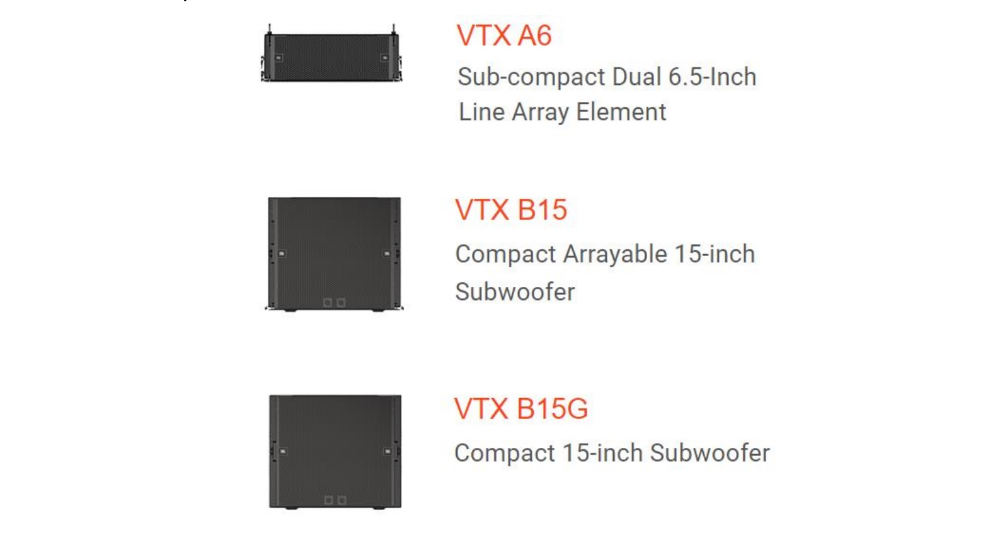

JBL Professional Solutions представляет элемент линейного массива JBL VTX A6 и компактный B15 Arrayable Subwoofer
ИЮЛЬ 26, 2022
Компания HARMAN Professional Solutions, мировой лидер в области технологий аудио, видео, освещения и управления, сегодня представила новейшие разработки флагманской серии линейных массивов VTX от JBL: субкомпактный двойной 6,5" пассивный линейный массив VTX A6 и компактный 15" сабвуфер B15 Arrayable Subwoofer.
A6 и B15 воплощают передовые акустические технологии JBL в компактных форм- факторах для малых и средних гастролей и инсталляций, предоставляя универсальные решения для продюсерских компаний, гастролей, ДК, театров, молитвенных домов и всех, кому требуется превосходное звуковое качество.
«Выбирая серию JBL VTX A, вы создаете целостную экосистему с общими акустическими профилями и системами подвески, единообразным звучанием, стандартизированным дизайном системы и операционными инструментами», — говорит Джордж Георгалис, директор по управлению продуктами — Performance Audio в HARMAN. Профессиональные решения. «И, получив доступ к технологиям VTX в новом сверхкомпактном корпусе, вы сможете максимизировать инвестиции в систему и обеспечить качество и производительность VTX в приложениях любого масштаба».
6,5-дюймовый пассивный двухполосный линейный массив A6 спроектирован с нуля для обеспечения потрясающих звуковых характеристик и простоты интеграции и развертывания в качестве отдельной системы или в качестве дополнения к более крупным системам VTX. Он оснащен двумя изготовленными на заказ 6,5” НЧ динамиками и 3”компрессионным драйвером с кольцевой диафрагмой, а также оснащен акустическими инновациями, впервые примененными в линейке JBL VTX, включая запатентованный JBL Radiation Boundary Integrator™ (RBI) и Differential Drive® с двойной звуковой катушкой, НЧ динамик с двумя магнитами. Все это в совокупности обеспечивает производительность большой системы в низкопрофильном громкоговорителе с расширением низких частот от 67 Гц и максимальным уровнем звукового давления 134 дБ.
Расширьте НЧ диапазон полнодиапазонных систем VTX с помощью 15”сабвуфера VTX B15. B15 отличается акустическими нововведениями, такими как экспоненциальные порты с двойным расширением SlipStream™ и дизайн с двойной звуковой катушкой Differential Drive, и основан на новом 15” субвуфере JBL 2285H, линейность, эффективность и амплитуда которого не уступают 18” моделям. Доступны две версии: массивная B15 и B15G - без оснастки для наземных приложений.
И A6, и B15 предназначены для универсального монтажа и легкой системной интеграции. В A6 используется запатентованная система крепления серии VTX A. Установите углы раскрытия, когда компоненты находятся на земле; как только система подвешена, запорный механизм автоматически фиксирует корпуса в заданных положениях. B15 имеет ту же ширину корпуса и подвесное оборудование, что и A6, что позволяет использовать эти два продукта вместе в конфигурациях с подвесным и наземным размещением; B15 поддерживает конфигурации с кардиоидным массивом. Оптимизируйте работу системы и обменивайтесь информацией с командами в режиме реального времени с помощью набора программных инструментов JBL, включая приложение для проектирования LAC-3, средство развертывания Array Link и приложение для настройки и управления Performance Manager. Простые, интуитивно понятные пользовательские интерфейсы позволяют пользователям проектировать системы за считанные минуты и управлять функциями из любого места.
Продукты серии JBL VTX A изготовлены из материалов премиум-класса, которые выдерживают суровые условия гастролей и установки на открытом воздухе. Корпуса изготовлены из березовой фанеры для наружных работ с черным покрытием Duraflex и оснащены решетками из нержавеющей стали с шестигранной перфорацией с порошковым покрытием и акустически прозрачной тканевой подложкой. Установки имеют степень защиты IP55, а металлические детали изготовлены из высококачественной стали с антикоррозийным покрытием.
С добавлением A6 и B15 серия JBL VTX предлагает полную экосистему для обеспечения непревзойденного усиления звука в любом масштабе, в любом месте и в любой точке мира.
Подробная информация на сайте.